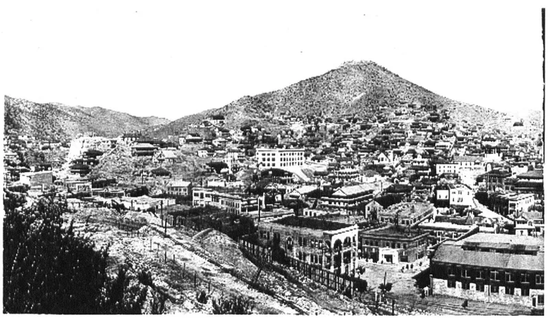

LDS scholars have a real answer here. Say so before your friend does.
In 2022 the Associated Press published an investigation drawing on about 12,000 pages of sealed records. It reported that the church's abuse help line routes a bishop's report of child sexual abuse to church lawyers, the firm Kirton McConkie, rather than to police.
Paul Adams confessed to two bishops, beginning in 2011, that he was abusing his daughter. Church counsel advised that Arizona's clergy-penitent privilege barred reporting.
The abuse went on for about seven more years. It came to include a second daughter, an infant.
Adams was caught independently in 2017.
The church calls the AP framing egregiously wrong, and its case is not weak. The bishop repeatedly urged Adams and his wife to report it, and tried to intervene.
Arizona law made the confession privileged. He could not legally pass on what he learned in it without consent.
Arizona's courts agreed. In 2023 the state supreme court upheld the privilege and dismissed the claims.
The help line exists so that untrained lay bishops reach professionals at once. Those professionals tell them how to comply with reporting law, which differs in every state.
Others knew too — the mother, and people who saw what Adams posted online — and they did not report either.
Genuinely arguable, and this one needs care. The timeline is not disputed: a confession in 2011, no report, and seven more years.
A child was harmed in that gap. What is contested is why.
The legal advice tracked the actual Arizona statute, and the courts sided with the church. What no answer removes is that the system produced this outcome, and that these calls run through defence counsel.
"When a bishop calls that line, who is on the other end?"

By Arizona law that confession was private. The state's high court agreed in 2023.
The church calls the AP framing egregiously wrong.
The bishop repeatedly urged Adams and his wife to report, and tried to intervene. Arizona law made the confession privileged. He legally could not pass on what he learned in it without consent. Arizona's courts agreed. In 2023 the state supreme court upheld the privilege and dismissed the claims against the church.
The help line exists so that untrained lay bishops reach professionals at once. Those professionals instruct them to comply with reporting laws, which vary by state. The church says its first priority is protecting victims.
And others knew. The mother knew, and so did people who saw what Adams posted online. They did not report either.
Arguable, and handle with care: the timeline is fixed, the cause is not.
The core timeline is established by court records and is not disputed. A confession in 2011. No report. Seven more years of abuse, coming to include a second daughter, an infant, until Adams was caught independently in 2017.
The claim about cause is genuinely argued. Did the help line exist to shield the institution ahead of children? The legal advice tracked Arizona's actual privilege statute, the courts sided with the church, and the bishops' bind was real.
What remains is that the system's design produced a catastrophic outcome, and that these calls route through defence counsel. Whether that is malice, negligence or compliance is the contested question.